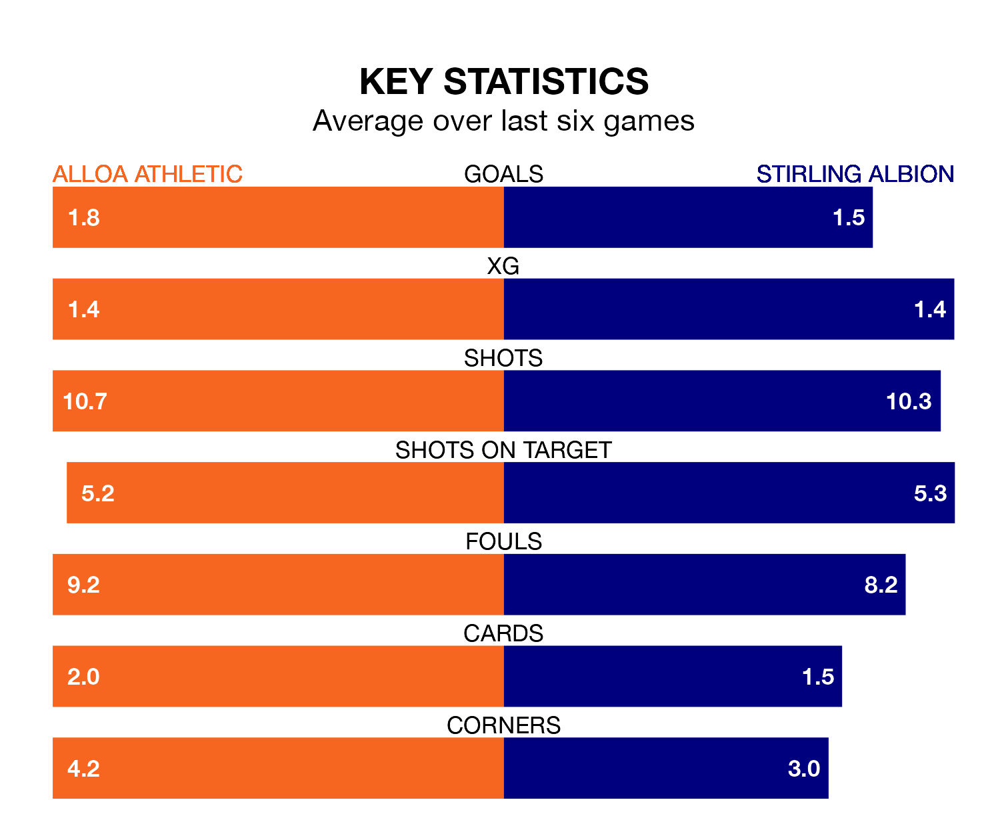

Alloa Athletic host Stirling Albion on Saturday at the Indodrill Stadium in League One.
In their last league match, on February 3, Alloa beat Annan Athletic 3-2 away, with goals from Bobby Wales (two) and Taylor Steven.
Stirling lost, 2-0 at home against Montrose on Tuesday.
In Blair Currie, Stirling can rely on one of the league's safest pair of hands. He has kept six clean sheets in his 22 appearances this season, and only one other 'keeper – Falkirk's Sam Long – has been able to prevent the opposition scoring on more occasions in League One.
In Alloa's net, Peter Morrison has four clean sheets in 16 games.
In the last 10 years, Alloa and Stirling have played each other on eight occasions. Alloa won six of them and Stirling two.
On average, Alloa scored 1.9 goals and the Binos 0.9 in those matches.
Their last meeting was on November 4, when Alloa won 2-0 away.
Albion are eighth in the table after 22 games, of which they have won seven and drawn five, earning 26 points.
Athletic are three places ahead of the Binos in fifth, with eight wins and five draws putting them on 29 points.
With 23 goals in 22 games so far this season, the away team are the league's lowest scorers with 1.0 goals per game. And they are conceding more than average, letting in 36 goals at a rate of 1.6 per game.
The hosts are also below average scorers, with 1.3 goals per game, compared to a league average of 1.5. They have conceded 1.7 goals per game.
Alloa are in reasonable form in League One, with three wins and two draws from their last six games.
With two wins and two draws over that period, Stirling's form is worse – they have taken eight points from 18, compared to Alloa's 11.
Updated: 11:18 (UTC), 08/02/24